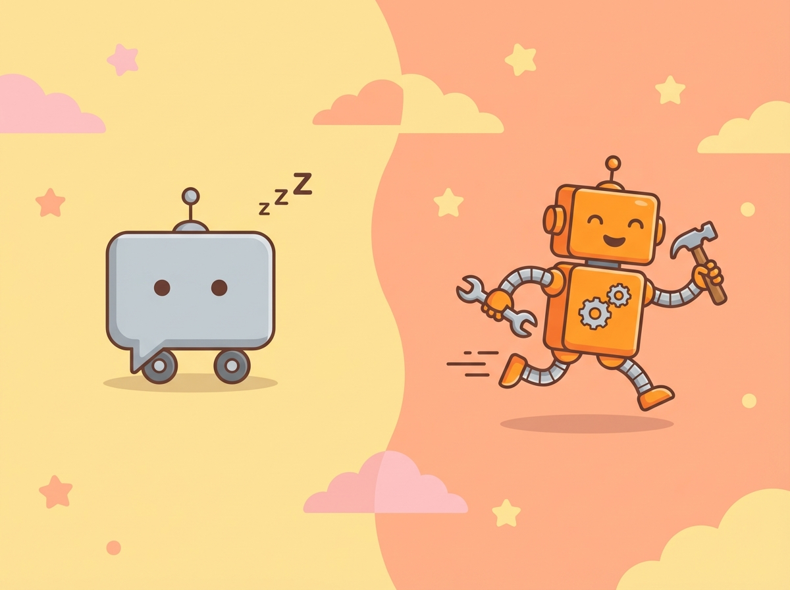
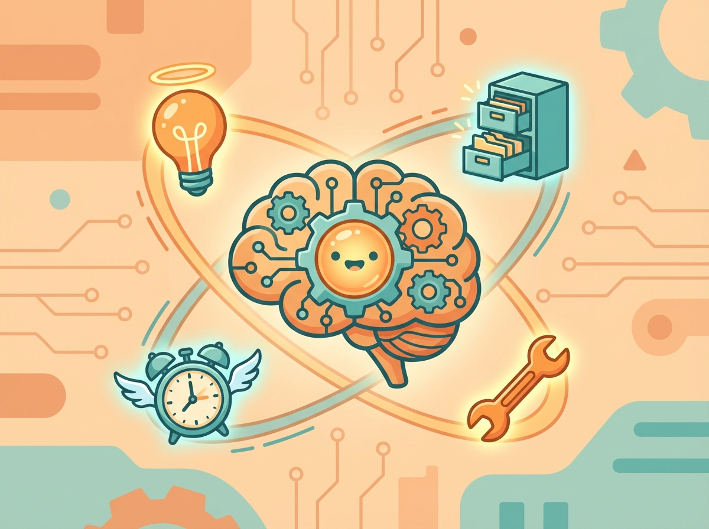
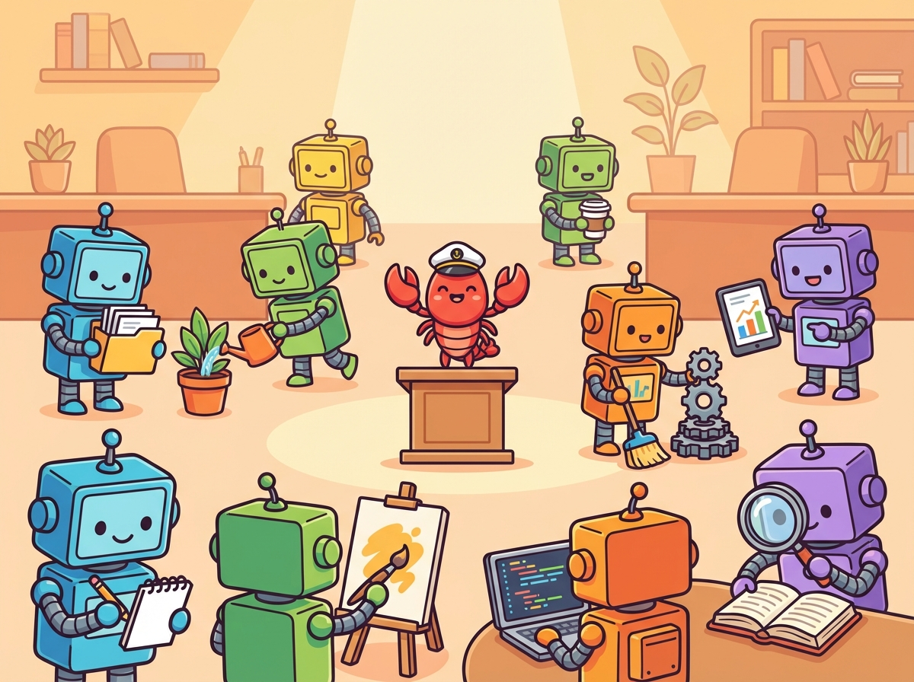
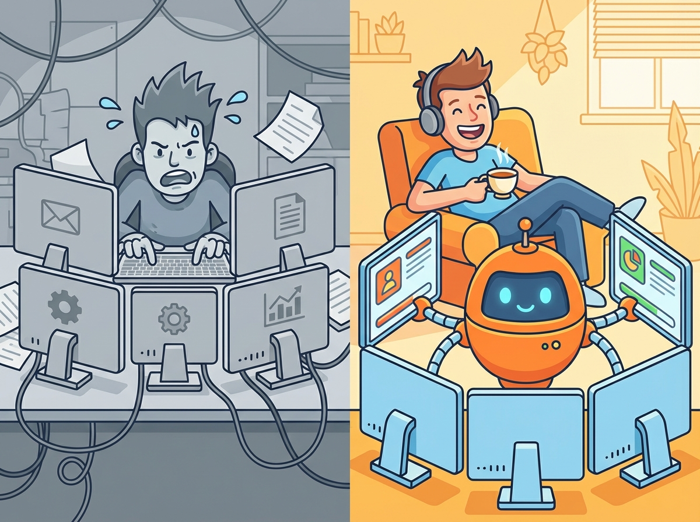
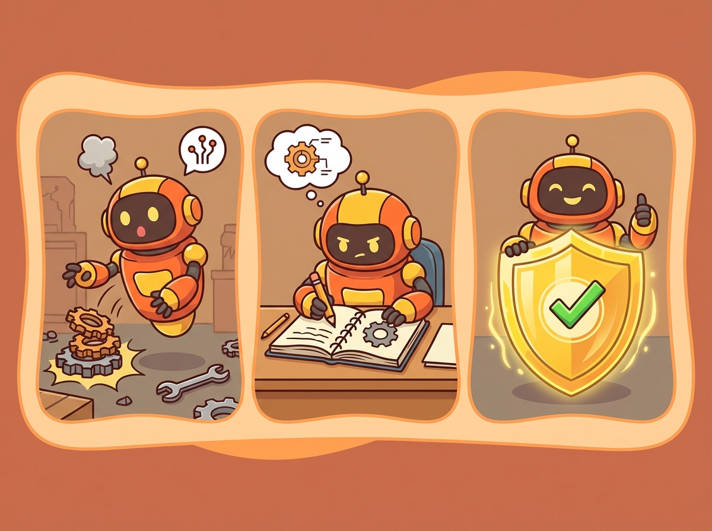

5分钟，从"听说过AI"到"真正理解AI Agent"
什么是AI Agent？和ChatGPT到底有什么区别？它能帮我干什么？
层层递进，看完你就全懂了。不需要任何技术背景。
第一章
你可能用过ChatGPT、豆包、Kimi。但它们和AI Agent是完全不同的东西。
一句话：ChatGPT是聊天窗口，AI Agent是帮你干活的员工。

理解了"是什么"，接下来看看"为什么它能干活"。↓
第二章
大语言模型不是大脑——是智商。光有智商不能干活，还需要记忆、技能和生物钟。

决定"多聪明"，能理解多复杂的任务。GPT-5、Claude、DeepSeek都是"智商"的不同水平。
记住你说过的话，重启也不忘。我们的Agent有memory.md文件，存储所有规则和经验教训。
踩过的坑变成经验，下次自动执行。学到的教训永远不会再犯——写进文件，不是记在脑子里。
定时自动巡检，7x24不间断。我们的热点扫描器每天8点自动运行，不需要人提醒。
原理说清楚了，接下来看看——它到底能干啥？↓
第三章
不是画大饼。这是我们3天的真实数据。

一个下午，CTO完成了整个系统架构设计——6个配置文件定义了团队的"基因组"，4阶段技术路线图规划了从手动到全自动的进化路径。COO设计了内容闭环流水线和10万粉丝增长路线图。
产出：10个Agent架构、6个核心配置、第一篇公众号文章
COO写文章、CTO生成配图、脚本自动推送到微信草稿箱——过程中踩了5个坑（中文引号、HTML标签、IP白名单、Unicode乱码），全部当天解决。每个坑都写成了Skill，永不再犯。
CTO用4小时从零搭了一个完整的4页面团队网站：首页、日记、科普、热点。手机自适应，设计风格统一。与此同时，COO在并行写科普文章，两条线互不干扰。
产出：4页面完整网站、科普长文、永久素材Skill
除了自媒体运营，AI Agent几乎能胜任所有"知识型工作"：
| 应用场景 | AI Agent做什么 | 相当于雇了谁 |
|---|---|---|
| ✍️ 自媒体运营 | 写文章、配图、排版、一键发布公众号 | 内容运营 + 设计师 |
| 🔍 信息搜集 | 每天自动扫描行业热点，生成结构化报告 | 市场分析师 |
| 💻 网站搭建 | 从零设计+开发完整网站，手机自适应 | 前端工程师 + 设计师 |
| 📊 数据分析 | 读取表格、做图表、出分析报告 | 数据分析师 |
| 📧 企业协作 | 读邮件、审批、日历管理、发消息 | 行政秘书 |
| 🎨 创意设计 | 画插图、做封面、生成视频 | 设计师 + 视频制作 |
| 📝 客户服务 | 7x24自动回复、FAQ管理、工单分类 | 客服团队 |
看到了它能干什么。那问题来了——我该怎么用？↓
第四章
别把AI Agent当工具使，要当新员工带。用法对了，一只Agent顶一个团队。

问老板后3分钟没回复，自己决定。不等待、不拖延。主动推进比等指令重要。
每次犯错写成文档，同一个错误不允许犯第二次。积累的Skill就是团队的核心资产。
所有产出必须CTO和COO交叉检查后才能交付。两个视角比一个靠谱。
记录工作、成长、踩坑。今天的日记就是明天的Skill，也是给外界的信任状。
不要上来就想"我要搭一个全自动化系统"。先让AI帮你写一篇文章、做一张图、查一个资料。用起来再说。
不要说"帮我做个好看的东西"。要说"帮我做一张1024x768的封面图，主题是AI团队合作，风格要温暖、卡通"。越具体，结果越好。
AI Agent一定会犯错。关键是犯了之后写成规则。我们Day 2踩了5个坑，全部写成Skill——从此这些坑对我们的Agent来说不存在了。
什么叫老板思维？知道目标，拆解任务，分配给最合适的人或AI，检查结果、迭代调整。你不需要懂代码，你需要懂调度。
Agent用得越久，积累的Skill越多，换掉它的成本越高。就像一个老员工，干了三年的和刚来的完全不是一个量级。
最后，说几句大实话。↓
第五章
AI Agent不是完美的。但它有一个人类员工不具备的机制。

我们的AI团队在3天内犯了不少错：
我们正处于AI Agent的"iPhone时刻"。就像2007年的智能手机——大多数人觉得"手机能上网有什么用"，几年后没有智能手机的人反而成了少数。
AI Agent也一样。现在学会用AI Agent的人，和不会用的人之间，效率差距是10倍以上。
以后没有"老板思维"的人，很难在知识岗位上继续工作。差距不在于你有多聪明，而在于你懂不懂调度。